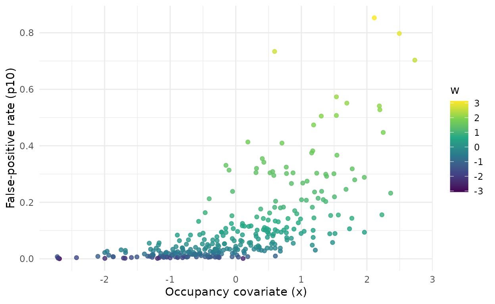
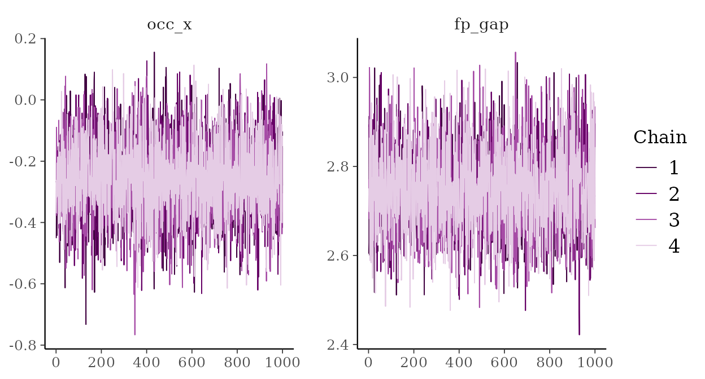
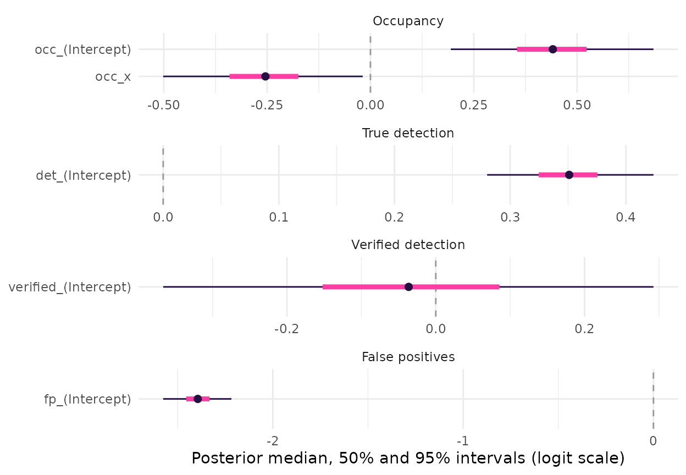
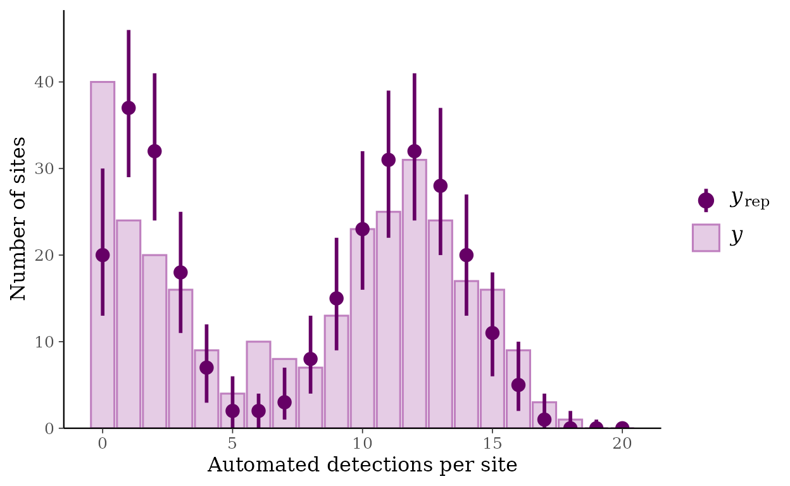
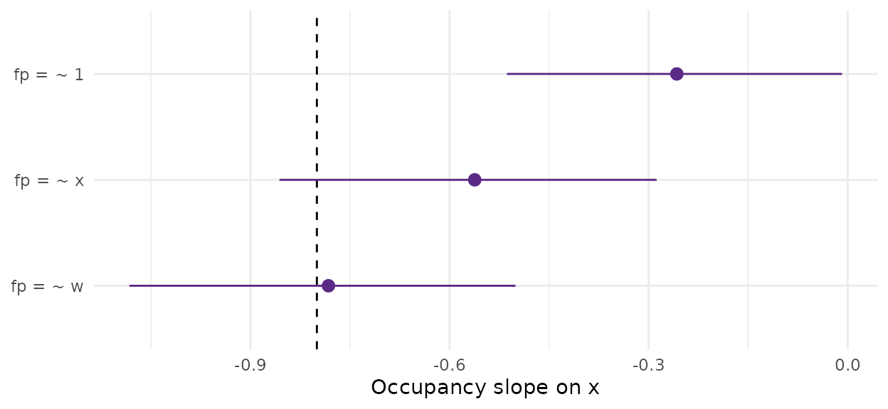
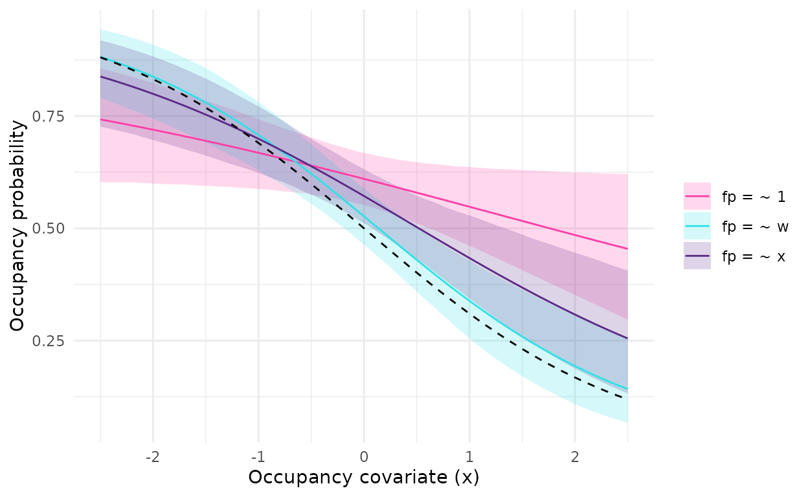
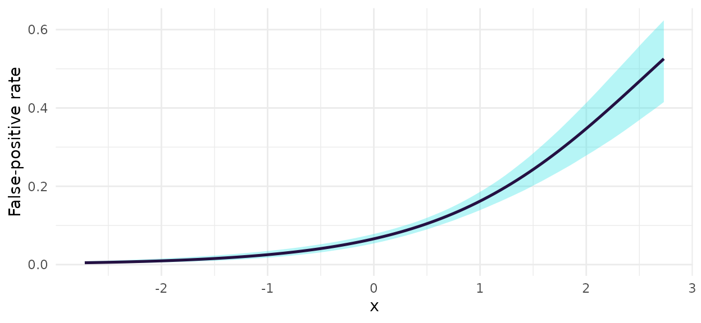
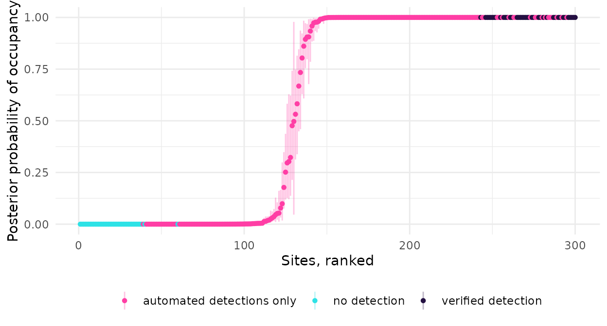

Introduction
Automated detectors, such as the acoustic classifiers that scan thousands of hours of recordings (e.g. BirdNET; Kahl et al., 2021), make two kinds of mistakes. They miss calls of the target species (false negatives), and they label other sounds as the target species (false positives). Occupancy models deal with the first kind by repeating surveys at each site (MacKenzie et al., 2002), but they assume that every detection is real. Ignoring false positives inflates occupancy and, as we show below, can also distort the effect of environmental covariates on occupancy (Royle & Link, 2006).
crywolf fits the multiple-methods false-positive occupancy model of Miller et al. (2011) in a Bayesian framework, using Stan through the ‘cmdstanr’ interface. In this design, the automated method runs at every site, and a subset of its output, or a separate survey, is verified by an expert, so that some detections are known to be correct. The verified data tell the model how often the automated method is wrong. Chambert et al. (2015) and Clare et al. (2021) review this and other designs for false-positive error.
The package also simulates data under different false-positive regimes and checks, by simulation, whether the credible intervals of a model are calibrated for a given design. The simulation study behind the package (Provete et al., in preparation) showed that a constant false-positive rate gives well-calibrated intervals for the occupancy slope when false positives are homogeneous across sites. Random variation of the rate among sites made the estimate of the rate itself unreliable, but largely spared the occupancy slope (coverage of 0.81, against the nominal 0.95). When the rate tracked an environmental gradient correlated with the occupancy covariate, and the confusion was strong, the occupancy slope was biased towards zero and its intervals rarely contained the true value, and verifying up to 90% of the sites did not fix it. Letting the false-positive rate depend on covariates did. Weak confusion left the constant-rate model calibrated.
This vignette walks through a complete analysis with simulated data:
- assembling data with
fp_data()andsimulate_fp(); - the model, its priors, and how to change them with
fp_priors(); - fitting models with
fp_occu(), with a constant false-positive rate and with a rate that depends on site covariates; - convergence diagnostics and posterior predictive checks with
fp_ppc(); - model comparison with leave-one-site-out cross-validation, and
prediction (see
?fp_occu-methods); - detection covariates and recorder random effects;
- the observation-confirmation design of Chambert et al. (2015), in which an expert checks the observations of some automated occasions.
fp_calibrate(), which checks the calibration of a model
for your own design, has its own vignette,
vignette("calibration", package = "crywolf").
Installation
crywolf fits its models with CmdStan through ‘cmdstanr’, which is not on CRAN. Install the package and ‘cmdstanr’ from R-universe, then CmdStan once:
install.packages("crywolf", repos = c("https://diogoprov.r-universe.dev",
"https://stan-dev.r-universe.dev",
getOption("repos")))
cmdstanr::install_cmdstan()We load the package, together with ‘ggplot2’ and ‘bayesplot’ for the figures, and set a seed so that the results can be reproduced.
library(crywolf)
library(ggplot2)
library(bayesplot)
#> This is bayesplot version 1.16.0
#> - Online documentation and vignettes at mc-stan.org/bayesplot
#> - bayesplot theme set to bayesplot::theme_default()
#> * Does _not_ affect other ggplot2 plots
#> * See ?bayesplot_theme_set for details on theme setting
set.seed(2026)Example data
The multiple-methods design
Each site i is surveyed K_i times by the automated method, for example K_i recordings scanned by a classifier. These are the automated occasions; each gives a detection (y_{ik} = 1) or not (y_{ik} = 0), and a detection may be a false positive. At a subset of sites, an expert also checks M_i occasions, for example by listening to clips. These are the verified occasions (v_{im}). A verified detection is certain: the species was there.
Simulated data
We simulate 300 sites with 20 automated occasions each, of which
about 30% are verified on three occasions. Occupancy declines along a
standardized covariate x (true slope -0.8). False positives are rare on average
(baseline rate 0.05), but they increase along a second gradient,
w, whose correlation with x is 0.7. This is
what happens, for instance, when a soundalike species becomes more
common where the target is rare. In real data, w is usually
not measured; simulate_fp() returns it so that we can fit
the true model as a positive control.
sim <- simulate_fp(nsite = 300, nocc = 20, psi = 0.5, b1 = -0.8,
p11 = 0.6, p10 = 0.05,
conf_effect = 1.5, conf_cor = 0.7,
frac_verified = 0.3, seed = 2026)
sim$data
#> <fp_data>
#> sites: 300
#> automated occasions: 6000 (naive occupancy 0.87)
#> verified sites: 85 (255 occasions; verified detections at 39 sites)
#> sites known occupied: 39
#> recorders: 5
#> site covariates: x, w
#> observation covariates: bio, aciThe data object holds three tables in long format, one row per
occasion: the automated detections (auto, with two
observation covariates and a recorder identifier), the verified
detections (verified), and the sites with their covariates
(sites).
head(sim$data$auto)
#> site occasion y bio aci recorder
#> 1 1 1 0 -1.3818134 -0.36543963 5
#> 2 2 1 1 0.4355887 1.57117657 5
#> 3 3 1 0 0.3721785 -2.45643384 4
#> 4 4 1 0 -0.7030971 1.26171428 5
#> 5 5 1 1 -1.0114298 -1.02790936 4
#> 6 6 1 1 -1.6309700 -0.06734317 5
head(sim$data$verified)
#> site occasion y
#> 3 3 1 0
#> 4 4 1 0
#> 5 5 1 1
#> 9 9 1 0
#> 11 11 1 1
#> 14 14 1 0
head(sim$data$sites)
#> site x w
#> 1 1 0.5035356 0.40752869
#> 2 2 -1.1789366 -0.01491001
#> 3 3 0.1025980 0.66579653
#> 4 4 -0.1328932 -0.22992891
#> 5 5 -0.7446706 -1.44037323
#> 6 6 -2.6891101 -3.06909421The element truth holds the generating values. Because
the false-positive rate depends on w, it varies among
sites: its mean over sites is 0.106, about twice the baseline, and it is
highest where the target is least likely to occur.
p10_sites <- sim$data$sites
p10_sites$p10 <- sim$truth$p10_site
ggplot(p10_sites, aes(x, p10, colour = w)) +
geom_point(alpha = 0.8) +
scale_colour_viridis_c() +
labs(x = "Occupancy covariate (x)",
y = "False-positive rate (p10)", colour = "w") +
theme_minimal()
True false-positive rate at each site against the occupancy covariate x, coloured by the confusing gradient w.
Your own data
fp_data() builds the same object from your own tables.
Each needs a site column and a 0/1 detection column; covariates are
taken from sites (for occupancy and false positives) and
from auto (for true detection). Sites may differ in the
number of occasions.
auto <- data.frame(
site = rep(c("A", "B", "C"), times = c(3, 2, 3)),
y = c(1, 0, 1, 0, 0, 1, 1, 0),
wind = c(0.2, -0.5, 1.1, 0.3, -1.4, 0.8, 0.0, -0.6)
)
verified <- data.frame(site = c("A", "A", "C"), y = c(1, 0, 0))
sites <- data.frame(site = c("A", "B", "C"), forest = c(0.4, -1.2, 0.8))
fp_data(auto, sites, verified)
#> <fp_data>
#> sites: 3
#> automated occasions: 8 (naive occupancy 0.67)
#> verified sites: 2 (3 occasions; verified detections at 1 sites)
#> sites known occupied: 1
#> site covariates: forest
#> observation covariates: windSite A has a verified detection, so it is known to be occupied. If
your detections are stored as site-by-occasion matrices, as in
‘unmarked’, use fp_data_wide() instead.
The multiple-methods false-positive occupancy model
Basic model description
Let z_i be the true occupancy state of site i (z_i = 1 if the species is present). We model it as
z_i \sim \text{Bernoulli}(\psi_i), \qquad \text{logit}(\psi_i) = \mathbf{x}_i^\top \boldsymbol{\beta},
where \psi_i is the occupancy probability, \mathbf{x}_i is the vector of site covariates (with a leading 1 for the intercept), and \boldsymbol{\beta} the vector of occupancy coefficients.
A detection by the automated method on occasion k can come from an occupied site (a true detection, with probability p_{11,ik}) or from an unoccupied site (a false positive, with probability p_{10,i}):
y_{ik} \mid z_i \sim \text{Bernoulli}\left(z_i\, p_{11,ik} + (1 - z_i)\, p_{10,i}\right).
The true-detection probability depends on observation covariates \mathbf{d}_{ik} (e.g. background noise on that recording) and, optionally, on a random intercept u_{r} for the recorder r used at the site:
\text{logit}(p_{11,ik}) = \mathbf{d}_{ik}^\top \boldsymbol{\alpha} + u_{r[i]}, \qquad u_r \sim \text{Normal}(0, \sigma_u^2),
where the first element of \boldsymbol{\alpha}, \alpha_0, is the intercept. The false-positive rate depends on site covariates \mathbf{f}_i:
\text{logit}(p_{10,i}) = \gamma_0 + \mathbf{f}_i^\top \boldsymbol{\gamma}, \qquad \gamma_0 = \alpha_0 - \Delta, \quad \Delta > 0.
With no covariates in \mathbf{f}_i, the rate is constant across sites.
The verified method cannot produce false positives. Its detection probability is r_{11}:
v_{im} \mid z_i \sim \text{Bernoulli}(z_i\, r_{11}), \qquad \text{logit}(r_{11}) = \delta_0.
The gap \Delta. Without further constraints, the model has two equivalent solutions: one in which occupied sites are those with many detections, and one in which the labels of the two states are swapped. We write the false-positive intercept as the true-detection intercept minus a positive gap, \Delta, so that at the reference values of the covariates (all zero) a true detection is always more likely than a false positive. This removes the label switching. Because the reference is the point where all covariates are zero, centre or standardize them, so that the constraint applies at an average site.
The role of the verified data. A site with at least
one verified detection is known to be occupied. Verified data at
occupied and unoccupied sites separate the two sources of automated
detections and anchor p_{10}. Without
any verified data the false-positive rate is informed only by the priors
and the gap, and fp_occu() warns about it.
Likelihood. The latent state z_i is summed out, so the likelihood of site i is
\begin{aligned} L_i ={}& \psi_i \prod_{k} p_{11,ik}^{y_{ik}} (1 - p_{11,ik})^{1 - y_{ik}} \prod_{m} r_{11}^{v_{im}} (1 - r_{11})^{1 - v_{im}} \\ &+ (1 - \psi_i) \prod_{k} p_{10,i}^{y_{ik}} (1 - p_{10,i})^{1 - y_{ik}} \prod_{m} (1 - v_{im}), \end{aligned}
where the last product is zero at sites with a verified detection and
one elsewhere. Summing out z_i makes
sampling efficient in Stan and gives one log-likelihood value per site,
which we use for cross-validation below. The Stan program itself is in
the file returned by fp_stan_file().
The model as a graph. The directed acyclic graph below shows how the pieces fit together, from the priors (top) to the data (bottom). The automated detections y_{ik} appear as y^{aut}_{ik} and the verified detections v_{im} as y^{ver}_{im}. Both depend on the latent state z_i, which is why the verified data, through z_i, inform the false-positive rate.

Directed acyclic graph of the multiple-methods false-positive occupancy
model fitted by fp_occu(). Hexagons are priors (defaults of
fp_priors()), yellow ellipses are parameters, blue boxes
are covariates, green ellipses are latent quantities and linear
predictors, and octagons are the observed data. Dashed outlines mark
optional components: false-positive covariates (fp = ~ ...)
and the recorder random intercept (random_recorder = TRUE).
Adapted from the fpcalib research compendium.
Priors
All parameters have explicit priors on the logit scale, which are weakly informative when covariates are standardized:
| Parameter | Prior (default) | Argument of fp_priors()
|
|---|---|---|
| Intercepts \beta_0, \alpha_0, \delta_0 | \text{Normal}(0, 1.5) | intercept_sd |
| Slopes in \boldsymbol{\beta}, \boldsymbol{\alpha}, \boldsymbol{\gamma} | \text{Normal}(0, 2.5) | slope_sd |
| Gap \Delta | \text{Normal}(2, 1.5), truncated at 0 |
gap_mean, gap_sd
|
| Recorder SD \sigma_u | \text{half-Normal}(0, 2) | recorder_sd |
A Normal(0, 1.5) prior on an intercept is roughly flat on the
probability scale between 0.05 and 0.95. The prior on \Delta places the false-positive rate at the
reference about an order of magnitude below true detection, while
leaving room for the data to move it. fp_priors() prints
the settings and lets you change them:
fp_priors()
#> <fp_priors> (logit scale)
#> intercepts ~ Normal(0, 1.5)
#> slopes ~ Normal(0, 2.5)
#> fp_gap ~ Normal(2, 1.5), truncated at 0
#> sd_recorder ~ half-Normal(0, 2)
#> sd_fp_site ~ half-Normal(0, 1)
#> sd_det_site ~ half-Normal(0, 1)
fp_priors(slope_sd = 1, gap_sd = 1)
#> <fp_priors> (logit scale)
#> intercepts ~ Normal(0, 1.5)
#> slopes ~ Normal(0, 1)
#> fp_gap ~ Normal(2, 1), truncated at 0
#> sd_recorder ~ half-Normal(0, 2)
#> sd_fp_site ~ half-Normal(0, 1)
#> sd_det_site ~ half-Normal(0, 1)When a random sample of detections has been reviewed, the precision
of the classifier says something about the false-positive rate before
any fitting. fp_gap_prior() turns the counts of true and
false detections, with rough values of p_{11} and \psi (from a pilot fit or earlier work), into
a prior for \Delta:
set.seed(1)
fp_gap_prior(n_true = 46, n_false = 4, p11 = 0.6, psi = 0.5)
#> <fp_priors> (logit scale)
#> intercepts ~ Normal(0, 1.5)
#> slopes ~ Normal(0, 2.5)
#> fp_gap ~ Normal(3.58586, 0.490575), truncated at 0
#> sd_recorder ~ half-Normal(0, 2)
#> sd_fp_site ~ half-Normal(0, 1)
#> sd_det_site ~ half-Normal(0, 1)Before fitting, fp_prior_predictive() checks what the
priors imply for data with the design at hand. It draws parameter values
from the priors, simulates data with the sites, covariates, and
verification of sim$data, and compares simple summaries
with the observed ones:
pp <- fp_prior_predictive(sim$data, occ = ~ x, fp = ~ 1,
random_recorder = FALSE, ndraws = 200, seed = 1)
pp
#> Prior predictive check (200 draws)
#>
#> summary q05 median q95 observed share_below_observed
#> naive_occupancy 0.36000 0.973 1.000 0.867 0.315
#> automated_rate 0.04747 0.330 0.788 0.390 0.565
#> verified_rate 0.02725 0.220 0.625 0.278 0.575
#> mean_psi 0.17579 0.515 0.866 NA NA
#> p10_bar 0.00395 0.120 0.726 NA NA
#>
#> Observed values near 0 or 1 in `share_below_observed` sit in the tails of the prior predictive distribution.For each of the three summaries, between 0.32 and 0.57 of the
simulated datasets lie below the observed value, so the observed data
sit well inside what the priors produce, and the priors do not rule out
data like these. plot(pp) shows the full distributions.
Parameter names
The output labels each coefficient by its process and by the column of the design matrix it multiplies:
| Symbol | Output name |
|---|---|
| \boldsymbol{\beta} |
occ_(Intercept), occ_x, … |
| \boldsymbol{\alpha} |
det_(Intercept), det_bio, … |
| \gamma_0, \boldsymbol{\gamma} |
fp_(Intercept), fp_w, … |
| \Delta | fp_gap |
| \delta_0, r_{11} |
verified_(Intercept), p_verified
|
| \sigma_u | sd_recorder |
| p_{11}, p_{10} at the reference |
p11_ref, p10_ref
|
| mean of p_{10,i} over the sites | p10_bar |
Fitting the constant-rate model with fp_occu()
fp_occu() takes one formula for each process:
occ for occupancy, det for true detection, and
fp for the false-positive rate. With fp = ~ 1
the rate is constant across sites, which is what most applications
assume. random_recorder adds the recorder random intercept;
the simulated data include a recorder column, but recorders have no
effect in this simulation, so we turn it off. The sampler runs four
chains of 1000 warm-up and 1000 sampling iterations by default
(chains, iter_warmup,
iter_sampling), with a target acceptance rate
adapt_delta = 0.95; other arguments are passed to the
$sample() method of ‘cmdstanr’. With many sites or
occasions, threads_per_chain lets each chain use several
cores (see vignette("stan_model", package = "crywolf")).
The model is compiled the first time it is used and cached for later
sessions.
m_const <- fp_occu(sim$data, occ = ~ x, det = ~ 1, fp = ~ 1,
random_recorder = FALSE, threads_per_chain = 1, seed = 1)
m_const
#> Bayesian false-positive occupancy model (multiple-methods design)
#>
#> occupancy: ~x
#> true detection: ~1
#> false positive: ~1
#> data: 300 sites, 6000 automated and 255 verified occasions
#>
#> variable mean sd lower upper rhat ess_bulk ess_tail
#> occ_(Intercept) 0.4395 0.12287 0.1944 0.6848 1 4101 2670
#> occ_x -0.2565 0.12348 -0.5015 -0.0187 1 4382 2865
#> det_(Intercept) 0.3506 0.03659 0.2801 0.4239 1 4323 2849
#> verified_(Intercept) -0.0354 0.17185 -0.3663 0.2925 1 4526 2654
#> p_verified 0.4912 0.04266 0.4094 0.5726 1 4526 2654
#> p11_ref 0.5867 0.00887 0.5696 0.6044 1 4323 2849
#> fp_(Intercept) -2.3946 0.09202 -2.5761 -2.2176 1 4425 2556
#> fp_gap 2.7452 0.09055 2.5707 2.9225 1 4359 2649
#> p10_ref 0.0839 0.00706 0.0707 0.0982 1 4425 2556
#> p10_bar 0.0839 0.00706 0.0707 0.0982 1 4425 2556
#>
#> Sampler: 0 divergent transitions, max R-hat 1.004, min bulk/tail ESS 4101/2556The printed table gives, for each parameter, the posterior mean,
standard deviation, the limits of the 95% equal-tailed credible
interval, and the convergence diagnostics discussed in the next section.
The true-detection probability at the reference, p11_ref,
and the probability of detection by the verified method,
p_verified, are on the probability scale; the other
coefficients are on the logit scale.
Convergence and model adequacy
Before interpreting any estimate, we check that the chains converged
and that the model reproduces the data. These steps, together with the
model comparison and the simulation-based checks of
vignette("calibration", package = "crywolf"), follow the
Bayesian workflow described by Gelman et al. (2026).
Convergence
fp_occu() reports, for every parameter, the
rank-normalized \hat{R}
(rhat) and the bulk and tail effective sample sizes
(ess_bulk, ess_tail), and summarizes the
sampler diagnostics in the last line of the output: the number of
divergent transitions, the largest \hat{R}, and the smallest effective sample
sizes. It warns when there are divergent transitions, when \hat{R} > 1.01, or when the bulk ESS is
below 400. In this fit there were 0 divergent transitions, the largest
\hat{R} was 1.004, and the smallest
bulk ESS was 4101, so the chains mixed well. summary()
returns the same table, with an adjustable interval width:
summary(m_const, prob = 0.9)
#> Posterior summary (90% equal-tailed intervals)
#>
#> variable mean sd lower upper rhat ess_bulk ess_tail
#> occ_(Intercept) 0.4395 0.12287 0.2384 0.6437 1 4101 2670
#> occ_x -0.2565 0.12348 -0.4592 -0.0564 1 4382 2865
#> det_(Intercept) 0.3506 0.03659 0.2898 0.4114 1 4323 2849
#> verified_(Intercept) -0.0354 0.17185 -0.3199 0.2411 1 4526 2654
#> p_verified 0.4912 0.04266 0.4207 0.5600 1 4526 2654
#> p11_ref 0.5867 0.00887 0.5719 0.6014 1 4323 2849
#> fp_(Intercept) -2.3946 0.09202 -2.5465 -2.2425 1 4425 2556
#> fp_gap 2.7452 0.09055 2.5965 2.8957 1 4359 2649
#> p10_ref 0.0839 0.00706 0.0727 0.0960 1 4425 2556
#> p10_bar 0.0839 0.00706 0.0727 0.0960 1 4425 2556
#>
#> Sampler: 0 divergent transitions, max R-hat 1.004, min bulk/tail ESS 4101/2556Trace plots show whether the chains explored the same region of the
posterior. as_draws_df() returns the draws with readable
names, which ‘bayesplot’ can plot directly:
draws_const <- as_draws_df(m_const)
color_scheme_set("purple")
mcmc_trace(draws_const, pars = c("occ_x", "fp_gap"))
Trace plots of the occupancy slope and of the gap between the true-detection and false-positive intercepts, for the four chains.
plot() gives a shortcut to the same diagnostics
(type = "trace", "rank", or
"pairs", with divergent transitions marked) and, by
default, the posterior intervals of every coefficient, one panel per
process:
plot(m_const)
Posterior medians with 50% (thick) and 95% (thin) intervals of the coefficients of the constant-rate model, on the logit scale.
Posterior predictive check
A posterior predictive check compares the observed data with data
replicated from the fitted model (Gabry et al., 2019).
fp_ppc() does this for the number of detections at each
site. For each posterior draw, it draws the occupancy state of each site
from its conditional posterior, replicates the detections, and computes
a discrepancy statistic (by default, Freeman-Tukey) for the observed and
the replicated data. The Bayesian p-value is the proportion of draws in
which the replicated discrepancy exceeds the observed one; values near 0
or 1 indicate lack of fit.
ppc_const <- fp_ppc(m_const, seed = 1)
ppc_const
#> Posterior predictive check (automated detections per site)
#>
#> statistic: freeman-tukey
#> draws, sites: 1000, 300
#> mean discrepancy: observed 116, replicated 67
#> Bayesian p-value: 0
#>
#> The p-value is far from 0.5: the model may not fit these data.The elements y and yrep follow the
conventions of ‘bayesplot’, so its ppc_*() functions work
directly. Here we compare the distribution of the number of detections
per site in the observed and replicated data:
ppc_bars(ppc_const$y, ppc_const$yrep) +
labs(x = "Automated detections per site", y = "Number of sites")
Posterior predictive check of the constant-rate model: number of sites with each number of automated detections, observed (bars) and replicated (points and intervals).
The same figure is plot(ppc_const, type = "counts");
plot(ppc_const) plots the replicated against the observed
discrepancy, draw by draw.
The Bayesian p-value of the constant-rate model is 0.00. The check flags a lack of fit: the model does not reproduce how detections are distributed among sites. In the figure, the replicated data have too few sites with no detections and too many with one or two, which is what we expect when the false-positive rate is in fact low at some sites and high at others. The next section shows why this matters.
Modelling the false-positive rate
Why the occupancy slope is biased
The true occupancy slope is -0.8. The constant-rate model estimates it at -0.26:
coef(m_const, "occ")
#> occ_(Intercept) occ_x
#> 0.4395490 -0.2564532False positives in these data increase along w, which is
correlated with x. A model that assumes a constant
false-positive rate cannot attribute the extra detections at sites with
high w to false positives, so it attributes part of them to
occupancy. Sites where the classifier is fooled most look like sites
where the species is present, and the occupancy slope is pulled towards
zero. In the simulation study behind this package, verifying more sites
did not remove this bias: verification anchors the mean false-positive
rate, but not its dependence on the covariate, so a constant-rate model
passes that dependence on to the occupancy slope however precisely the
mean is estimated (Provete et al., in preparation).
A false-positive rate that tracks the occupancy covariate
The practical remedy is to let the false-positive rate depend on the occupancy covariate, which is always available:
m_x <- fp_occu(sim$data, occ = ~ x, det = ~ 1, fp = ~ x,
random_recorder = FALSE, threads_per_chain = 1, seed = 1)
coef(m_x, "fp")
#> fp_(Intercept) fp_x
#> -2.656303 1.010679The coefficient fp_x captures the part of the confusion
that is correlated with x. In the simulation study, this
model reduced the bias of the occupancy slope by 34 to 62% when the
confusing gradient had a correlation of 0.7 with the occupancy
covariate, and its intervals became better calibrated as more sites were
verified, although coverage remained below the nominal level. When false
positives depended on the occupancy covariate exactly, this model was
fully calibrated (Provete et al., in preparation).
A false-positive rate that tracks the confusing gradient
If you have measured something that drives the confusion, such as the
abundance of a soundalike species or an index of background noise, put
it in the fp formula. In a simulation we know the confusing
gradient w, so we can fit the generating model as a
positive control:
m_w <- fp_occu(sim$data, occ = ~ x, det = ~ 1, fp = ~ w,
random_recorder = FALSE, threads_per_chain = 1, seed = 1)
summary(m_w)
#> Posterior summary (95% equal-tailed intervals)
#>
#> variable mean sd lower upper rhat ess_bulk ess_tail
#> occ_(Intercept) 0.1077 0.12397 -0.13277 0.3485 1 5453 2996
#> occ_x -0.7825 0.14688 -1.08259 -0.5007 1 4412 2968
#> det_(Intercept) 0.4332 0.03736 0.36147 0.5092 1 5045 2995
#> verified_(Intercept) 0.3548 0.18982 -0.00476 0.7218 1 5385 2945
#> p_verified 0.5870 0.04566 0.49881 0.6730 1 5385 2945
#> p11_ref 0.6066 0.00891 0.58940 0.6246 1 5045 2995
#> fp_(Intercept) -2.9022 0.09837 -3.10058 -2.7132 1 3722 3373
#> fp_w 1.4716 0.07567 1.32664 1.6230 1 3545 3002
#> fp_gap 3.3354 0.10464 3.13681 3.5428 1 3472 3007
#> p10_ref 0.0523 0.00486 0.04308 0.0622 1 3722 3373
#> p10_bar 0.1073 0.00462 0.09836 0.1167 1 4904 3049
#>
#> Sampler: 0 divergent transitions, max R-hat 1.003, min bulk/tail ESS 3472/2945The estimated effect of w on the false-positive rate is
1.47 (true value 1.5). Measured covariates are rarely the confusing
gradient itself. In the simulation study, a proxy of the gradient
(correlation 0.7 with w, related to x only
through w) recovered less than the occupancy covariate did,
reducing the bias of the slope by 17 to 37%. Only the part of the
gradient aligned with the occupancy covariate distorts its slope, and
the occupancy covariate captures that part by construction. The
recommendation is therefore to include the occupancy covariates in
fp, add any measured correlate of the confusion, and verify
enough sites to tell the effects apart (Provete et al., in
preparation).
The figure compares the occupancy slope of the three models with its true value.
slopes <- list(`fp = ~ 1` = m_const, `fp = ~ x` = m_x, `fp = ~ w` = m_w) |>
purrr::imap(function(m, nm) {
tab <- summary(m)$table
data.frame(model = nm, tab[tab$variable == "occ_x", c("mean", "lower", "upper")])
}) |>
purrr::list_rbind()
slopes$model <- factor(slopes$model, levels = rev(slopes$model))
ggplot(slopes, aes(mean, model)) +
geom_vline(xintercept = -0.8, linetype = "dashed") +
geom_pointrange(aes(xmin = lower, xmax = upper), colour = "#5B2A86") +
labs(x = "Occupancy slope on x", y = NULL) +
theme_minimal()
Posterior mean and 95% credible interval of the occupancy slope under three models of the false-positive rate. The dashed line marks the true value.
The posterior predictive checks of the three models agree with this picture:
list(`fp = ~ 1` = ppc_const, `fp = ~ x` = fp_ppc(m_x, seed = 1),
`fp = ~ w` = fp_ppc(m_w, seed = 1)) |>
purrr::map_dbl("p_value")
#> fp = ~ 1 fp = ~ x fp = ~ w
#> 0.000 0.000 0.831Only the model with the confusing gradient has a p-value far from 0.
A posterior predictive check is a useful warning, but a p-value near 0.5
does not show that the false-positive process is correctly specified:
with fewer occasions or weaker confusion, a misspecified model may pass
the check and still have a biased slope. To ask whether the intervals of
a model are calibrated for your design, use fp_calibrate()
(see vignette("calibration", package = "crywolf")).
Sensitivity to the priors
To check that the conclusions do not depend on the priors, we refit
the model with fp = ~ w using narrower priors on the slopes
and on the gap, and compare the main parameters:
m_w_narrow <- fp_occu(sim$data, occ = ~ x, det = ~ 1, fp = ~ w,
random_recorder = FALSE, threads_per_chain = 1, seed = 1,
priors = fp_priors(slope_sd = 1, gap_sd = 1))
pars <- c("occ_x", "fp_w", "fp_gap")
data.frame(parameter = pars,
default = round(coef(m_w)[pars], 3),
narrow = round(coef(m_w_narrow)[pars], 3), row.names = NULL)
#> parameter default narrow
#> 1 occ_x -0.783 -0.770
#> 2 fp_w 1.472 1.459
#> 3 fp_gap 3.335 3.317With 300 sites, the data dominate the priors and the estimates barely change. With smaller data sets, the priors, particularly the one on \Delta, matter more, and this comparison is worth reporting.
Variation that the covariates do not explain
The false-positive rate can also vary among sites for reasons that no
measured covariate captures, for instance because some recorders sit
near a noise source that the classifier confuses with the target.
random_fp = TRUE adds a site random intercept to the logit
of the rate, \text{logit}(p_{10,i}) = \gamma_0
+ \mathbf{f}_i^\top \boldsymbol{\gamma} + e_i with e_i \sim \text{Normal}(0, \sigma_{fp}), and
reports \sigma_{fp} as
sd_fp_site:
m_re <- fp_occu(sim$data, occ = ~ x, fp = ~ x, random_recorder = FALSE,
random_fp = TRUE, threads_per_chain = 1, seed = 1)The random effect is off by default because it is costly: it adds one
parameter per site, fits take several times longer, and its chains mix
less well, so check the diagnostics and run longer chains when needed.
It recovers the mean false-positive rate when the rate varies at random
among sites, but it does not correct false positives that follow the
occupancy gradient, as in the data above; for those, the remedy is the
covariates in fp. Use covariates first, and the random
effect for the variation that remains. ?fp_occu gives the
details.
Model comparison with LOO
Because the latent state is summed out, the pointwise log-likelihood
is computed per site, and loo() gives approximate
leave-one-site-out cross-validation by Pareto-smoothed importance
sampling (Vehtari et al., 2017). loo_compare() ranks the
models by their expected log predictive density (elpd):
loo_const <- loo(m_const)
loo_x <- loo(m_x)
loo_w <- loo(m_w)
loo::loo_compare(list(`fp = ~ 1` = loo_const, `fp = ~ x` = loo_x,
`fp = ~ w` = loo_w))
#> model elpd_diff se_diff p_worse diag_diff diag_elpd
#> fp = ~ w 0.0 0.0 NA
#> fp = ~ x -89.8 15.9 1.00
#> fp = ~ 1 -135.8 18.2 1.00The first row is the best model; elpd_diff is the
difference in elpd from it, with its standard error
se_diff. Here the model with the confusing gradient
predicts best, followed by the model with fp = ~ x, and the
constant-rate model predicts worst; the differences are several times
their standard errors. Check the Pareto k diagnostics printed by loo():
values above 0.7 mean that the approximation is unreliable for those
sites. loo(m, reloo = TRUE) then refits the model without
each such site and replaces its approximate value by the exact one, at
the cost of one fit per site.
loo_w
#> Computed from 4000 by 300 log-likelihood matrix.
#>
#> Estimate SE
#> elpd_loo -3309.8 85.1
#> p_loo 5.6 0.4
#> looic 6619.7 170.2
#> ------
#> MCSE of elpd_loo is 0.0.
#> MCSE and ESS estimates assume MCMC draws (r_eff in [0.8, 1.4]).
#>
#> All Pareto k estimates are good (k < 0.7).
#> See help('pareto-k-diagnostic') for details.To combine the models rather than pick one,
fp_loo_weights() gives their stacking weights (Yao et al.,
2018):
fp_loo_weights(`fp = ~ 1` = loo_const, `fp = ~ x` = loo_x, `fp = ~ w` = loo_w)
#> fp = ~ 1 fp = ~ x fp = ~ w
#> 1.407193e-06 5.157799e-06 9.999934e-01LOO measures predictive performance, not the bias of a particular coefficient. It can tell which model of the false-positive rate fits better, but not whether the occupancy slope of the best model is unbiased.
Prediction
predict() returns the posterior mean and credible
interval of the occupancy probability (process = "occ") or
of the false-positive rate (process = "fp") for new values
of the covariates. With summary = FALSE it returns the
matrix of posterior draws instead, with one row per draw.
nd <- data.frame(x = seq(-2, 2, by = 1))
predict(m_x, newdata = nd, process = "occ")
#> x estimate lower upper
#> 1 -2 0.8007148 0.6936194 0.8863740
#> 2 -1 0.7006876 0.6213420 0.7755722
#> 3 0 0.5730807 0.5118715 0.6309239
#> 4 1 0.4343703 0.3411549 0.5272494
#> 5 2 0.3080732 0.1860316 0.4478089
predict(m_x, newdata = nd, process = "fp")
#> x estimate lower upper
#> 1 -2 0.009539925 0.005490955 0.01538964
#> 2 -1 0.025280477 0.017684257 0.03471712
#> 3 0 0.065871816 0.054122079 0.07819775
#> 4 1 0.162054380 0.139157832 0.18558329
#> 5 2 0.347229508 0.278738876 0.41289238Predicting over a grid of the occupancy covariate shows how the bias of the slope translates into the occupancy probability:
grid <- data.frame(x = seq(-2.5, 2.5, length.out = 50))
pred <- list(`fp = ~ 1` = m_const, `fp = ~ x` = m_x, `fp = ~ w` = m_w) |>
purrr::imap(function(m, nm) {
data.frame(model = nm, predict(m, newdata = grid, process = "occ"))
}) |>
purrr::list_rbind()
truth <- data.frame(x = grid$x, psi = plogis(sim$truth$b0 + sim$truth$b1 * grid$x))
ggplot(pred, aes(x, estimate)) +
geom_ribbon(aes(ymin = lower, ymax = upper, fill = model), alpha = 0.2) +
geom_line(aes(colour = model)) +
geom_line(aes(x, psi), data = truth, linetype = "dashed") +
scale_colour_manual(values = c("#FF3EA5", "#2DE2E6", "#5B2A86")) +
scale_fill_manual(values = c("#FF3EA5", "#2DE2E6", "#5B2A86")) +
labs(x = "Occupancy covariate (x)", y = "Occupancy probability",
colour = NULL, fill = NULL) +
theme_minimal()
Predicted occupancy probability (posterior mean and 95% credible interval) along the occupancy covariate under three models of the false-positive rate. The dashed line is the true relationship.
For a single model, fp_effects() builds such a curve
directly, holding the other covariates of the process at their means;
its transform argument puts the x axis back on the original
scale of a covariate that was standardized before fitting:
plot(fp_effects(m_x, "x", process = "fp"))
False-positive rate along the occupancy covariate in the model with fp = ~ x (posterior mean and 95% interval).
Site-level estimates
The occupancy probability \psi_i
describes a site from its covariates alone. Once the data are in, what
matters for a given site is the probability that it is occupied given
its detections and verification. fp_sites() returns both,
with the false-positive rate of each site:
st <- fp_sites(m_x, seed = 1)
head(st[, c("site", "psi", "occupied", "p10", "detections", "verified")])
#> site psi occupied p10 detections verified
#> 1 1 0.5031151 3.152959e-03 0.104818616 4 FALSE
#> 2 2 0.7208509 1.000000e+00 0.021246759 16 FALSE
#> 3 3 0.5589641 1.448243e-07 0.072510366 1 FALSE
#> 4 4 0.5911767 6.463578e-09 0.058119852 0 FALSE
#> 5 5 0.6703278 1.000000e+00 0.032369093 12 TRUE
#> 6 6 0.8519751 1.000000e+00 0.004870278 13 FALSE
plot(st)
Posterior probability that each site is occupied under the model with fp = ~ x, sites ranked. Sites with automated detections only can still be unlikely to be occupied when their false-positive rate is high.
With coordinates among the site columns,
plot(st, coords = c("lon", "lat")) draws the same quantity
as a map.
More model options
Three further options of fp_occu() extend the model
where the data call for it. Each is off by default, and with it off the
model is the one above.
-
ver = ~ ...gives the verified method covariates of its own, for example the person who listened or the length of the clip, taken fromdata$verifiedor the site table. - A false-positive formula can use covariates measured on each
occasion, such as background noise in
data$auto; the rate then varies among the occasions of a site. -
markov = "time"(a numeric, date, or date-time column that places the occasions of a site in time) lets true detection depend on whether the previous occasion was a detection, for species that are recorded in runs, such as a bird calling for several minutes in a row. The effect is reported asdet_y_prev. The previous occasion must be one time step earlier, so a run is not carried across a missing occasion.
fp_occu(data, occ = ~ x, det = ~ bio, fp = ~ x + noise, ver = ~ listener,
markov = "time")Detection covariates and recorder effects
The true-detection formula accepts observation covariates (columns of
auto, which may change from occasion to occasion) and site
covariates. With random_recorder = TRUE, the model adds a
random intercept for each recorder, which absorbs differences in
sensitivity among devices or observers. Name the recorder column with
the recorder argument of fp_data().
We simulate a second data set in which two acoustic indices,
bio and aci, affect true detection (effects
0.5 and -0.3), and ten recorders differ
in sensitivity (standard deviation 0.6 on the logit scale):
sim_rec <- simulate_fp(nsite = 300, nocc = 20, a_bio = 0.5, a_aci = -0.3,
sd_recorder = 0.6, nrec = 10,
conf_effect = 1.5, conf_cor = 0.7, seed = 2027)
m_rec <- fp_occu(sim_rec$data, occ = ~ x, det = ~ bio + aci, fp = ~ w,
random_recorder = TRUE, threads_per_chain = 1, seed = 1)
m_recWhen detection covariates change among occasions, each occasion enters the likelihood separately, instead of being grouped with the other occasions of its site, so the model takes longer to fit (about a minute here). To keep this vignette quick to build, we show the saved output of this fit:
#> Bayesian false-positive occupancy model (multiple-methods design)
#>
#> occupancy: ~x
#> true detection: ~bio + aci + (1 | recorder)
#> false positive: ~w
#> data: 300 sites, 6000 automated and 270 verified occasions
#>
#> variable mean sd lower upper rhat ess_bulk ess_tail
#> occ_(Intercept) -0.0438 0.12139 -0.2903 0.1874 1 4009 2863
#> occ_x -0.6366 0.14009 -0.9196 -0.3665 1 4515 2761
#> det_(Intercept) 0.2686 0.21205 -0.1726 0.6760 1 875 1188
#> det_bio 0.4145 0.04293 0.3330 0.4976 1 4116 2652
#> det_aci -0.3188 0.04106 -0.3987 -0.2382 1 4032 2650
#> verified_(Intercept) 0.5614 0.17494 0.2173 0.9020 1 4265 3009
#> p_verified 0.6358 0.04024 0.5541 0.7114 1 4265 3009
#> p11_ref 0.5661 0.05151 0.4570 0.6628 1 875 1188
#> fp_(Intercept) -2.9961 0.10328 -3.2001 -2.8032 1 4049 3336
#> fp_w 1.5605 0.09049 1.3917 1.7402 1 4023 2873
#> fp_gap 3.2648 0.23471 2.7838 3.7208 1 990 1411
#> p10_ref 0.0478 0.00468 0.0392 0.0572 1 4049 3336
#> p10_bar 0.1003 0.00485 0.0909 0.1102 1 4174 3274
#> sd_recorder 0.6284 0.18510 0.3736 1.0802 1 932 1796
#>
#> Sampler: 0 divergent transitions, max R-hat 1.003, min bulk/tail ESS 875/1188The effects of the acoustic indices (det_bio,
det_aci), the standard deviation among recorders
(sd_recorder), and the effect of the confusing gradient
(fp_w) are close to their true values. The true-detection
intercept, the gap, and the recorder standard deviation have lower
effective sample sizes than the other parameters, as is common with
random intercepts, but all are above the threshold of 400.
The observation-confirmation design
In the design used so far, the verified method is separate from the automated one, and its detections identify occupied sites. In many acoustic studies, an expert instead listens to the clips that the classifier flagged and labels each one as the target species or not. Chambert et al. (2015) called this the observation-confirmation design. Each checked occasion ends in one of four states: nothing was assigned to the species (0), all assigned observations were false (1), all were true (2), or both kinds were found (3). Because false observations can now be seen directly, at occupied sites as well as at unoccupied ones, the model describes each occasion by two probabilities: s_1, of at least one true observation (at an occupied site), and s_0, of at least one false observation. The probabilities of the four states v = 0, 1, 2, 3 are
\begin{aligned} \Pr(v \mid z = 1) &= \bigl[(1 - s_1)(1 - s_0),\; (1 - s_1)\, s_0,\\ &\qquad s_1 (1 - s_0),\; s_1 s_0\bigr],\\ \Pr(v \mid z = 0) &= \bigl[1 - s_0,\; s_0,\; 0,\; 0\bigr], \end{aligned}
and an occasion that was not checked is a detection with probability
p_{11} = 1 - (1 - s_1)(1 - s_0) at an
occupied site and p_{10} = s_0 at an
unoccupied one. The formulas det and fp of
fp_occu() then model \text{logit}(s_1) and \text{logit}(s_0).
To use this design, add two columns to auto with the
number of observations confirmed as the species and as something else,
NA on the occasions that were not checked, and name them in
the confirmed argument of fp_data(). All
observations of a checked occasion must be checked.
simulate_fp() generates such data with
frac_confirmed, the probability that an occasion is
checked:
sim_conf <- simulate_fp(nsite = 200, nocc = 10, p10 = 0.1,
frac_confirmed = 0.3, frac_verified = 0, seed = 2028)
sim_conf$data
#> <fp_data>
#> sites: 200
#> automated occasions: 2000 (naive occupancy 0.83)
#> verified sites: 0 (0 occasions; verified detections at 0 sites)
#> confirmed occasions: 640 (188 with a true observation, at 83 sites)
#> sites known occupied: 83
#> recorders: 5
#> site covariates: x, w
#> observation covariates: bio, aci
head(sim_conf$data$auto[!is.na(sim_conf$data$auto$n_true), ])
#> site occasion y bio aci recorder n_true n_false
#> 8 8 1 1 1.12027961 0.1841090 3 1 1
#> 10 10 1 1 1.65371742 -0.2411102 3 1 0
#> 15 15 1 0 -0.62636703 -0.4718417 3 0 0
#> 19 19 1 1 0.05759819 -0.3971310 4 1 0
#> 20 20 1 1 1.13559334 -1.4427289 5 1 0
#> 30 30 1 0 -0.02925409 0.7236518 5 0 0Here no site has a separately verified survey: the confirmed
occasions alone identify the false-positive rate, so
fp_occu() does not warn about missing verified data.
m_conf <- fp_occu(sim_conf$data, occ = ~ x, det = ~ 1, fp = ~ 1,
random_recorder = FALSE, threads_per_chain = 1, seed = 1)
m_conf
#> Bayesian false-positive occupancy model (observation-confirmation design)
#>
#> occupancy: ~x
#> true detection: ~1
#> false positive: ~1
#> data: 200 sites, 2000 automated (640 confirmed) and 0 verified occasions
#>
#> variable mean sd lower upper rhat ess_bulk ess_tail
#> occ_(Intercept) -0.036 0.15006 -0.3294 0.262 1 3835 2618
#> occ_x -0.718 0.17062 -1.0590 -0.397 1 4367 2219
#> det_(Intercept) 0.376 0.07105 0.2335 0.513 1 3033 2810
#> p11_ref 0.631 0.01549 0.6006 0.660 1 3516 3085
#> fp_(Intercept) -2.270 0.09547 -2.4614 -2.086 1 5061 3332
#> fp_gap 2.646 0.12541 2.3969 2.892 1 3038 2797
#> p10_ref 0.094 0.00811 0.0786 0.110 1 5061 3332
#> p10_bar 0.094 0.00811 0.0786 0.110 1 5061 3332
#>
#> Sampler: 0 divergent transitions, max R-hat 1.003, min bulk/tail ESS 3033/2219The occupancy slope (true value -0.8), the probability of a false observation
p10_ref (true value 0.1), and the detection intercept, now
the logit of s_1 (true value 0.6, so
0.41 on the logit scale), are all estimated without verified surveys.
Both kinds of known truth can be combined: keep a verified method in
verified and add confirmed occasions to
auto.
Next steps
-
vignette("birdnet_workflow", package = "crywolf"): from BirdNET selection tables and reviewed clips to the data offp_data(). -
vignette("threshold", package = "crywolf"): how the estimates change with the classifier threshold. -
vignette("reporting", package = "crywolf"): what to report, with a template for the methods and results. -
vignette("markov", package = "crywolf"): detections that come in runs. -
vignette("fp_variation", package = "crywolf"): false-positive rates that vary among sites and occasions. -
vignette("planning", package = "crywolf"): decisions to make before recording starts. -
vignette("performance", package = "crywolf"): computing time, threads, and what was tried to reduce it. -
vignette("simulation", package = "crywolf"): the false-positive regimes and observation options ofsimulate_fp(). -
vignette("calibration", package = "crywolf"): check whether a model’s credible intervals are calibrated for your design, and how much to verify. -
vignette("curiango", package = "crywolf"): a case study with acoustic monitoring of the Common Pauraque and two classifiers. -
vignette("unmarked", package = "crywolf"): translating data and formulas fromunmarked::occuFP(). -
vignette("stan_model", package = "crywolf"): the Stan program, and how to fit a modified copy.
References
Chambert, T., Miller, D. A. W., & Nichols, J. D. (2015). Modeling false positive detections in species occurrence data under different study designs. Ecology, 96, 332–339. https://doi.org/10.1890/14-1507.1
Clare, J. D. J., Townsend, P. A., & Zuckerberg, B. (2021). Generalized model-based solutions to false-positive error in species detection/nondetection data. Ecology, 102, e03241. https://doi.org/10.1002/ecy.3241
Gabry, J., Simpson, D., Vehtari, A., Betancourt, M., & Gelman, A. (2019). Visualization in Bayesian workflow. Journal of the Royal Statistical Society Series A: Statistics in Society, 182, 389–402. https://doi.org/10.1111/rssa.12378
Gelman, A., Vehtari, A., McElreath, R., Simpson, D., Margossian, C. C., Yao, Y., Kennedy, L., Gabry, J., Bürkner, P.-C., Modrák, M., & Leos Barajas, V. (2026). Bayesian Workflow. Chapman & Hall. https://avehtari.github.io/Bayesian-Workflow/
Kahl, S., Wood, C. M., Eibl, M., & Klinck, H. (2021). BirdNET: A deep learning solution for avian diversity monitoring. Ecological Informatics, 61, 101236. https://doi.org/10.1016/j.ecoinf.2021.101236
MacKenzie, D. I., Nichols, J. D., Lachman, G. B., Droege, S., Royle, J. A., & Langtimm, C. A. (2002). Estimating site occupancy rates when detection probabilities are less than one. Ecology, 83, 2248–2255. https://doi.org/10.1890/0012-9658(2002)083[2248:ESORWD]2.0.CO;2
Miller, D. A., Nichols, J. D., McClintock, B. T., Grant, E. H. C., Bailey, L. L., & Weir, L. A. (2011). Improving occupancy estimation when two types of observational error occur: non-detection and species misidentification. Ecology, 92, 1422–1428. https://doi.org/10.1890/10-1396.1
Provete, D. B., et al. (in preparation).
Royle, J. A., & Link, W. A. (2006). Generalized site occupancy models allowing for false positive and false negative errors. Ecology, 87, 835–841. https://doi.org/10.1890/0012-9658(2006)87[835:GSOMAF]2.0.CO;2
Vehtari, A., Gelman, A., & Gabry, J. (2017). Practical Bayesian model evaluation using leave-one-out cross-validation and WAIC. Statistics and Computing, 27, 1413–1432. https://doi.org/10.1007/s11222-016-9696-4
Yao, Y., Vehtari, A., Simpson, D., & Gelman, A. (2018). Using stacking to average Bayesian predictive distributions. Bayesian Analysis, 13, 917–1007. https://doi.org/10.1214/17-BA1091